PhD student at BU Astronomy
I am a PhD student in Prof. Wen Li's research group and developer passionate about AI-assisted computational space physics research. I am currently investigating Earth's electron precipitation through REAL cubesat. My work focuses on data analysis, simulation, and building tools that bridge the gap between physical theory and numerical computation. As a undergraduate, I worked with Prof. Shengyi Ye on planetary dusty physics including Mars and Jupiter. My long term goal is to study planetary magnetospheres comparatively.
Developing a Python-based tool for Coronal Mass Ejection evolution
Worked on Martian and Jovian dust projects.
I grew up in Dalian (大连), a city in northeastern China. It was a beautiful coastal city where I spent my first 18 years there. Besides, I went to Canterbury, UK for my sixth year in primary school with my mother, who was a visiting scholar at University of Kent.
As an undergraduate at SUSTech in Shenzhen (深圳), I chose Geophysics as my major in the second year with focus on space physics. I worked with Prof. Shengyi Ye on planetary dusty physics, studying the dust environments around Mars and Jupiter. In spring semester of the third year, I went to UC Berkeley as an exchange student. My wife and I met in English of Academic Purpose course and got married in our fourth year.
I am now a PhD student in astronomy at Boston University, working with Prof. Wen Li on Earth's electron precipitation.
Outside the lab, I enjoy soccer, table tennis, badminton, strategy games, and cooking. Moreover, I love traveling.
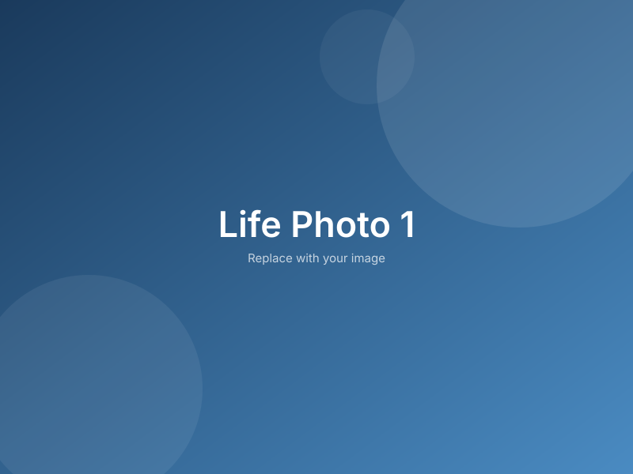
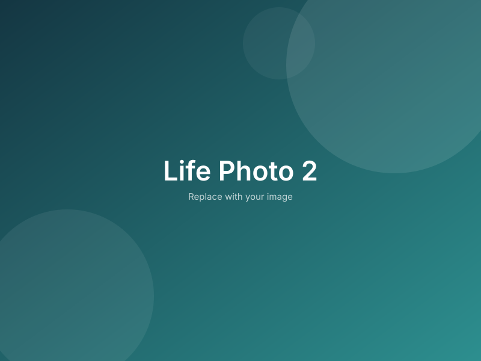
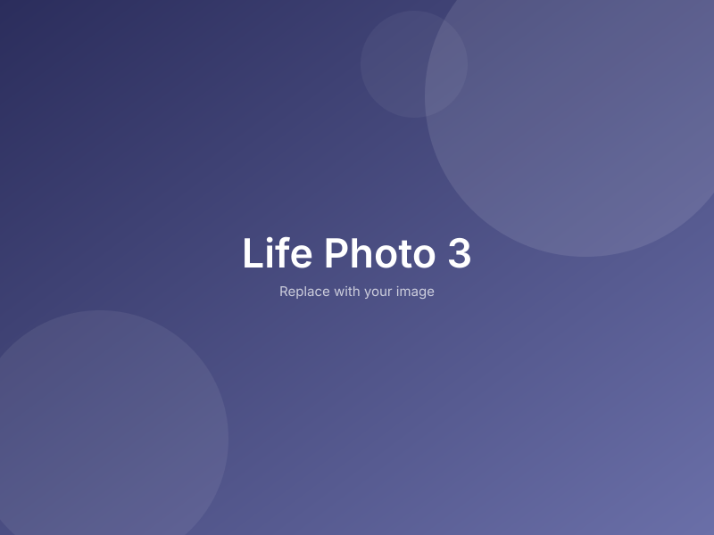
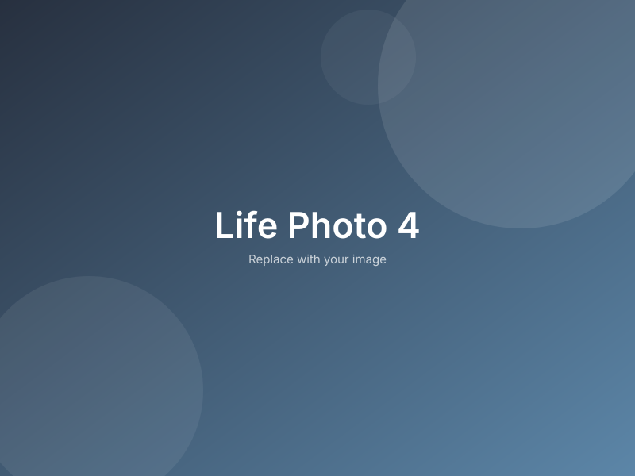
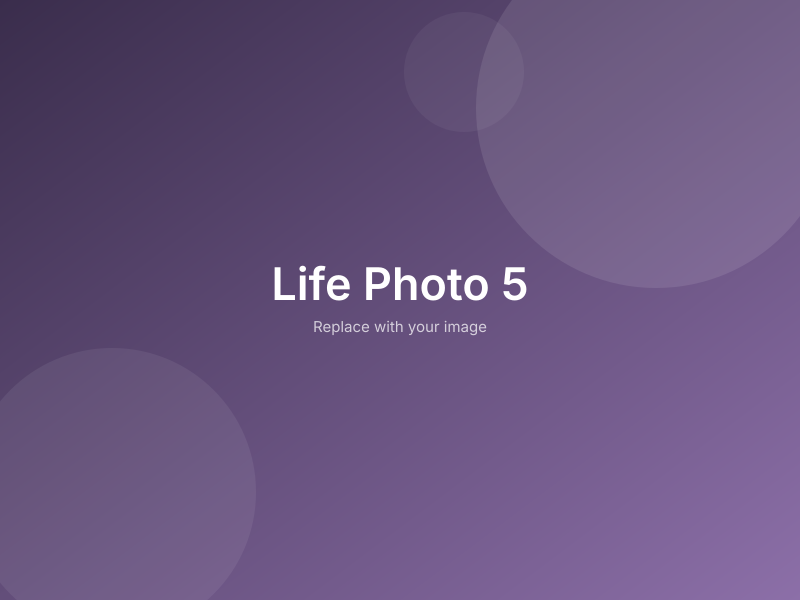
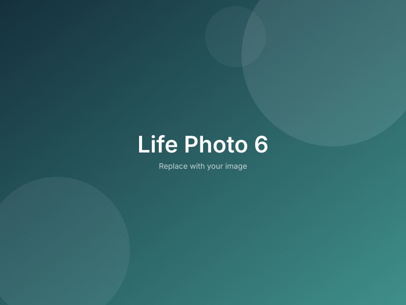
My research lies at the intersection of computational physics and scientific computing. I develop and apply numerical methods to study physical systems, with a particular focus on simulation, modeling, and data-driven discovery.
Current research directions include dust dynamics in planetary environments, high-performance simulation frameworks, and the application of machine learning techniques to physical problems.
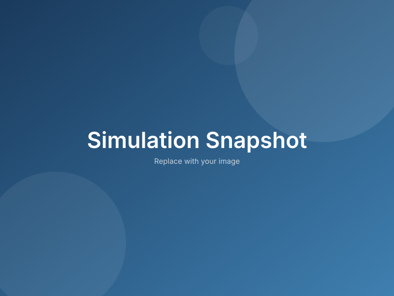
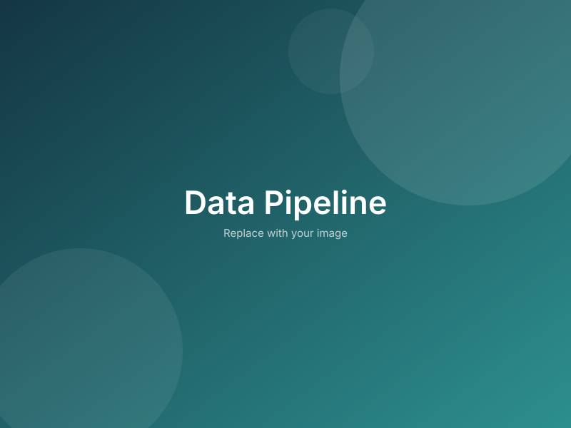
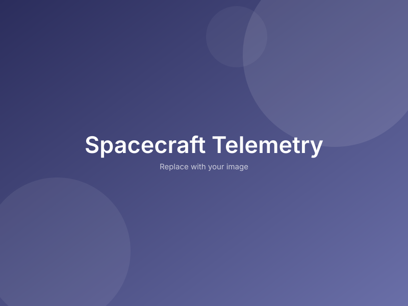
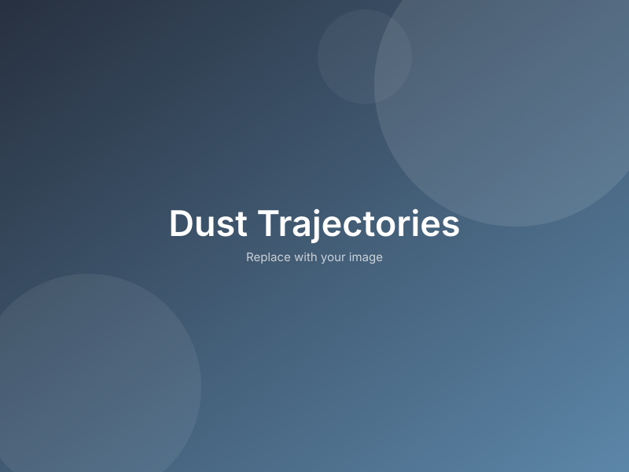
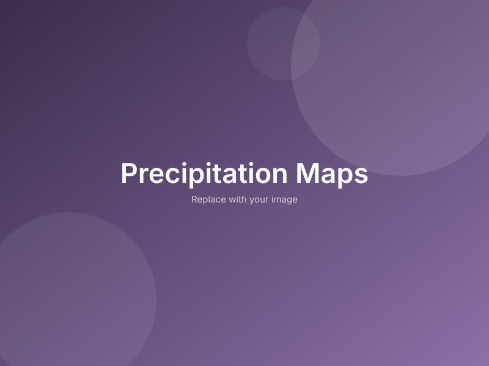
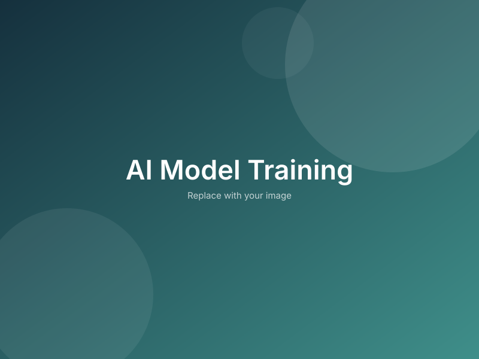
A brief description of the project, its goals, and what it achieves.
High-fidelity simulation of dust particle dynamics in the Jovian environment using NASA SPICE toolkit and custom numerical integrators. Analyzes impact rates, trajectories, and size distributions for the Juno spacecraft mission.